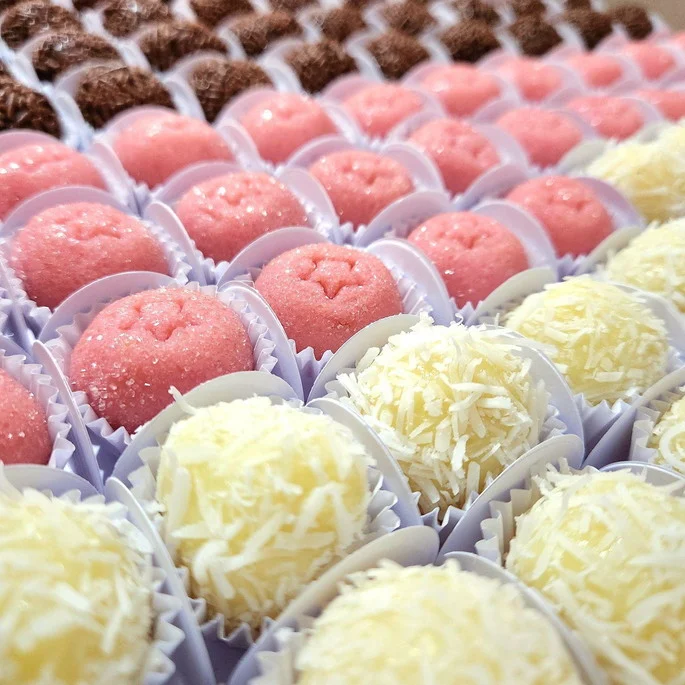
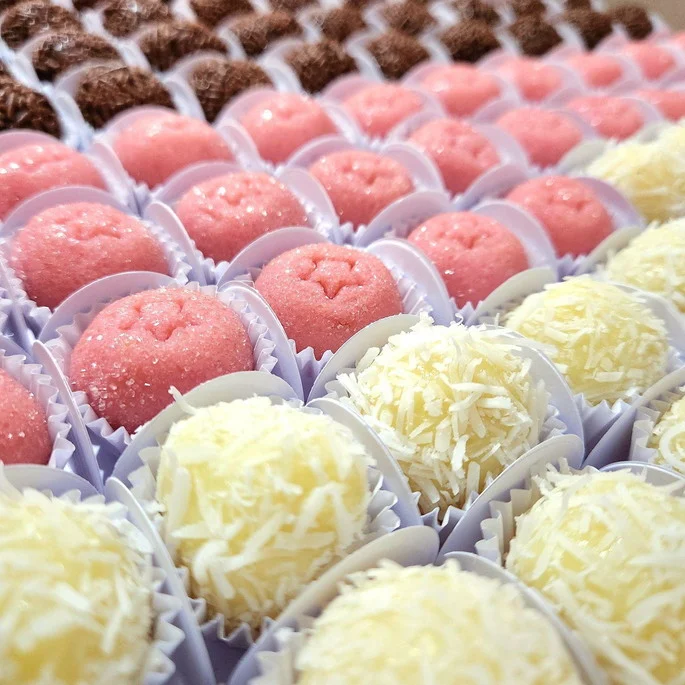
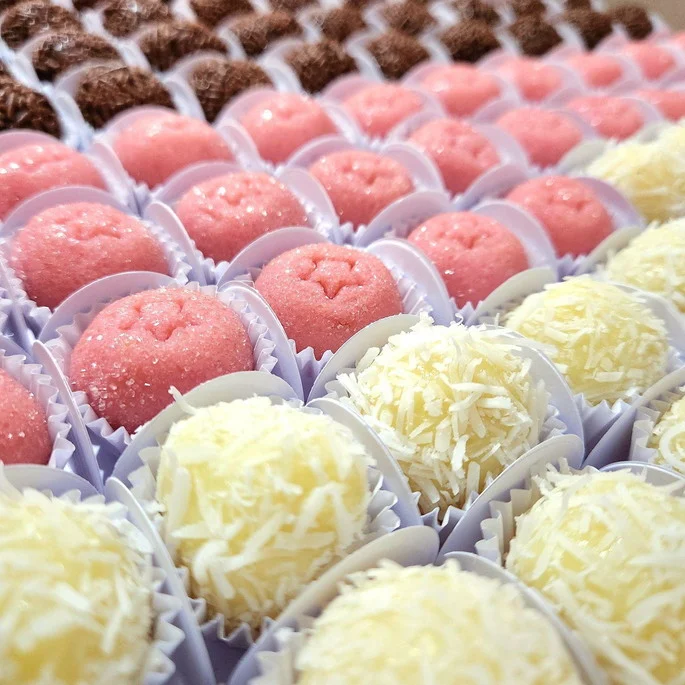

Aprenda técnicas incríveis e encante corações com suas criações doces

Nosso curso de confeitaria foi feito para quem deseja unir arte, sabor e emoção em cada doce. Com técnicas modernas, receitas exclusivas e dicas de especialistas, você estará pronto(a) para encantar clientes e familiares com suas criações irresistíveis.
Quero me inscrever!